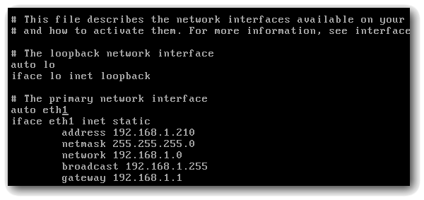

Einleitung
Um ein Linux-System in ein Netzwerk einzubinden, bedarf es der
Konfiguration der einzelnen Netzwerk-Schnittstellen (z.B. Ethernet
oder WLAN), den "Interfaces". Linux bietet für diese Konfiguration
verschiedene Möglichkeiten.
Eine dieser Möglichkeiten ist die Konfiguration über die Datei
interfaces. Sie ist im Dateisystem unter /etc/network/ zu finden.
Sie führen in diesem WebQuest eine grundlegende Netzwerk-Konfigurationen über diese Datei durch. Außerdem lernen Sie Unterschiede zu den anderen Konfigurationsmöglichkeiten kennen.